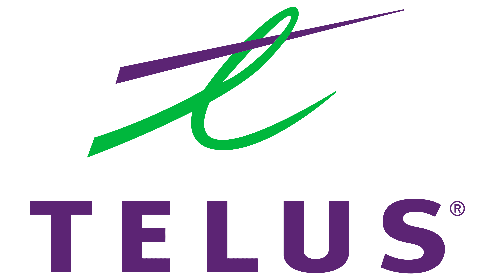
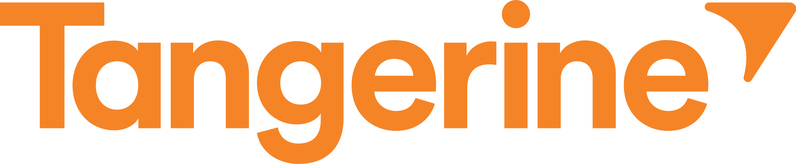
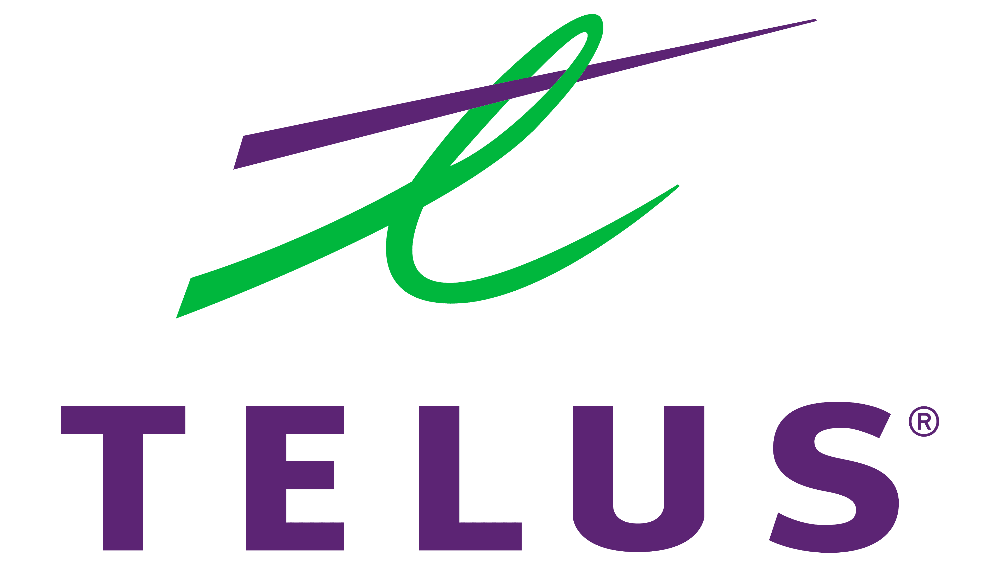
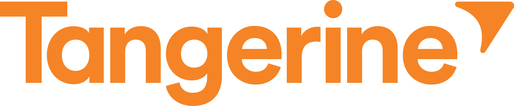

Bringing manual experiences to the digital world
as a User Experience Designer @ a Top Five Canadian Bank

I've been working as a tech consultant at Avanade (an Accenture + Microsoft venture) since I graduated from Western University with a bachelors in software engineering (BESc) in 2017. My mix of technical understanding, user-centered approach, and eye for design, results in thorough designs, great communication with developers, and ideas that come to life.
Besides work, I love to adventure, play board games, discover skincare products, drink bubble tea, and I run a small business (www.sende.ca) with one of my oldest friends.
 



From research to maintenance, I've provided value throughout the full life cycle of product development. Note: I can't share everything due to NDAs 🤷🏻♀️
as a User Experience Designer @ a Top Five Canadian Bank
as a Service designer @ a Telecommunications Company

as a User Experience Designer @ a Gas/Utilities Company
...and more ~